Mekakushi Dan หรือกลุ่มซ่อนดวงตาเป็นกลุ่มของตัวละครการ์ตูนที่มีจุดเริ่มมาจากเพลงของ Shizen no Teki-P หรืออีกชื่อคือ JIn เป็นเพลงที่สร้างใช้โปรแกรมเสียงสังเคราะห์ที่เรารู้จักในชื่อ Vocaloid
โดยเพลงเหล่านี้รู้จักกันในชื่อ เพลงซีรี่ย์ Kagerou Project ซึ่งวันนี้เราจะพาทุคนมารู้จักเพลง และสมาชิกในกลุ่ม Makakushi Dan ถ้าพร้อมแล้วมากันเลย
เพลง
1.Jinzou Enemy
| Original Title | English Title | Singer |
|---|---|---|
| Jinzou Enemy | Artificial Enemy | Hatsune Miku |
2.Mekakushi Code
| Original Title | English Title | Singer |
|---|---|---|
| Mekakushi Code | Blindfold Code | Hatsune Miku |
3.Kagerou Daze
| Original Title | English Title | Singer |
|---|---|---|
| Kagerou Daze | Heat-Haze Daze | Hatsune Miku |
4.Headphone Actor
| Original Title | English Title | Singer |
|---|---|---|
| Heddofon Akutaa | Headphone Actor | IA |
5.Souzou Forest
| Original Title | English Title | Singer |
|---|---|---|
| Souzou Forest | Fantasy Forest | IA |
5.Konoha no Sekai jijou
| Original Title | English Title | Singer |
|---|---|---|
| Konoha no Sekai jijou | Konoha's State of the world | Hatsune Miku and IA |
สมาชิก
NO.1 คิโดะ สึโบมิ
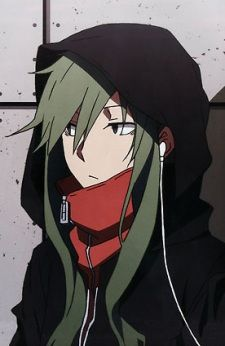
สาวเท่ผู้เป็นสมาชิกหมายเลข 1 และหัวหน้าของกลุ่มซ่อนดวงตา แม้ว่าภายนอกจากดูน่ากลัวและเย็นชา แต่ที่จริงแล้วภายในเป็นคนที่เป็นห่วงคนอื่นอยู่เสมอ โดยเฉพาะเหล่าสมาชิกในกลุ่มซ่อนดวงตา
สึโบมิเติบโตมาในบ้านเลี้ยงเด็กกำพร้าร่วมกับโคสุเกะและชูยะ ก่อนจะถูกรับเลี้ยงโดยพ่อแม่ของอายาโนะ ทำให้ทั้งหมดมองอายาโนะเป็นเสมือนพี่สาว แต่หลังจากที่อายาโนะเสียชีวิต สึโบมิจึงต้องขึ้นมาทำหน้าที่นั้นแทน
ความสามารถ : Concealing Eye สึโบมิสามารถลบการรับรู้ของตนและคนใกล้เคียงในระยะ 2 เมตรได้ ซึ่งนอกจากจะทำให้คนอื่นไม่เห็นแล้ว ก็ยังไม่ได้ยินเสียงที่พูดคุยกันด้วย เพียงแต่ว่าไม่สามารถป้องกันการสัมผัสได้
NO.2 เซโตะ โคสุเกะ
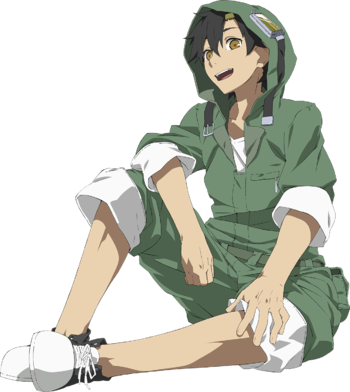เด็กหนุ่มใจดีผู้มีรอยยิ้มประดับอยู่บนใบหน้าเสมอ มีนิสัยที่มักจะคอยไปสำรวจสถานที่ใหม่ๆ อยู่ตลอด โคสุเกะมักจะทำงานพิเศษหลายอย่างเช่น ร้านขายดอกไม้, พนักงานจราจร หรือส่งหนังสือพิมพ์ เป็นต้น ในตอนเด็กนั้น
โคสุเกะเคยช่วยชีวิตสุนัขที่ถูกเด็กคนอื่นๆ รุมรังแก และยังเป็นคนที่ไปเจอกับแมรี่ และทำให้แมรี่กล้าเผชิญหน้ากับคนอื่นอีกด้วย
ความสามารถ :Stealing Eye โคสุเกะสามารถอ่านความคิดของผู้อื่น รวมไปถึงสัตว์ต่างๆ ได้ แต่ถึงอย่างนั้นก็ไม่สามารถสื่อสารกับสัตว์ได้ เพราะเหล่าสัตว์ไม่สามารถเข้าใจสิ่งที่โคสุเกะพูดได้นั่นเอง
NO.3 คาโนะ ชูยะ
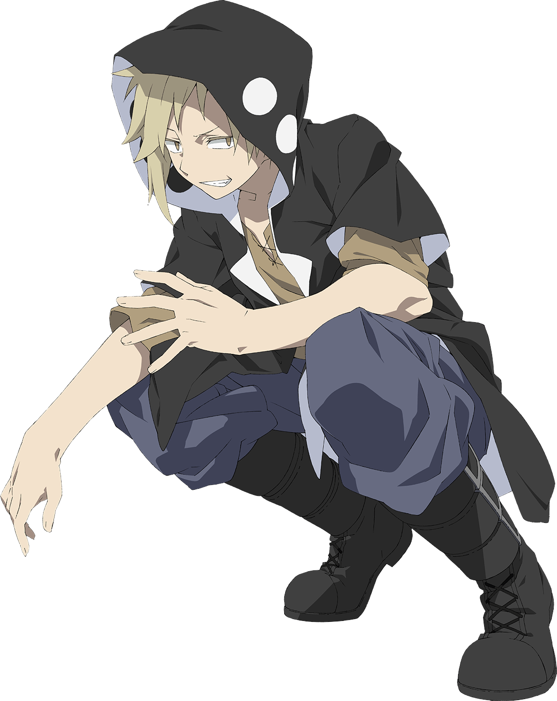เด็กหนุ่มขี้เล่น สมาชิกลำดับที่ 3 แห่งกลุ่มซ่อนดวงตา และยังเป็นผู้คิดชื่อให้กับกลุ่มอีกด้วย แม้ภายนอกชูยะจะดูเป็นคนเจ้าชู้และรักสนุก แต่ในความเป็นจริงแล้ว เจ้าตัวมักจะเก็บซ่อนอุปนิสัยที่แท้จริงไว้เสมอ
ความสามารถ :Deceiving Eye ชูยะสามารถปรับเปลี่ยนรูปร่างของตนเองให้กลายเป็นสิ่งมีชีวิตอื่นได้ โดยมีเงื่อนไขว่าเขาจะต้องรู้จักและเคยสัมผัสกับสิ่งมีชีวิตนั้นมาก่อน และหากได้รับบาดเจ็บหนัก ผลของพลังนี้ก็จะหายไป
NO.4 โคซากุระ แมรี่
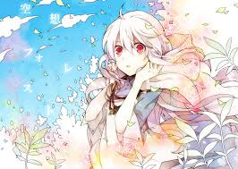สมาชิกลำดับที่ 4 ของกลุ่มซ่อนดวงตา เธอมีเชื้อสายของกอร์กอนอยู่หนึ่งในสี่ แมรี่เป็นเด็กสาวขี้อายผู้มักจะเก็บตัวอยู่ในบ้านเสมอและมีร่างกายอ่อนแอ ในตอนเด็กนั้นแมรี่กับแม่เคยถูกมนุษย์บุกเข้าจู่โจมจนโดนฆ่า เธอจึงกลัวมนุษย์คนอื่นมาก ในเวลาต่อมา โคสุเกะได้เข้ามาพบกับแมรี่ ซึ่งทำให้เธอได้กล้าออกไปเผชิญกับโลกภายนอกมากยิ่งขึ้น
ความสามารถ :Staring Eye แมรี่สามารถทำให้ผู้ที่ถูกเธอจ้องนั้นเป็นอัมพาตได้ชั่วขณะ ซึ่งเป็นความสามารถที่เธอได้รับสืบทอดมาจากยายและแม่ของเธอในฐานะกอร์กอน แม้จะไม่สามารถทำให้ถึงขั้นผู้ที่ถูกจ้องมองกลายเป็นหินได้เหมือนยายและแม่ของเธอก็ตาม
Combining Eye นอกจากความสามารถที่สืบทอดมาจากแม่แล้ว แมรี่ยังมีความสามารถในการควบคุมเหล่างูของกอร์กอนซึ่งเธอได้รับมาจากยายในตอนที่เธอหลุดเข้าไปใน Kagerou Daze อีกด้วย
NO.5 คิซารางิ โมโมะ
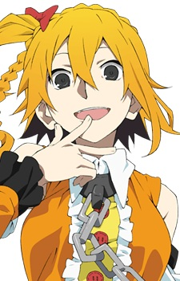เด็กสาวผู้ร่าเริงและน้องสาวแท้ๆ ของคิซารางิ ชินทาโร่ สมาชิกลำดับที่ 5 ของกลุ่มซ่อนดวงตา และยังเป็นไอดอลดาวรุ่งแห่งยุคอีกด้วย โมโมะมีเซนส์ด้านแฟชั่นผิดแปลกจากชาวบ้าน เพราะความสามารถในดวงตาของเธอ ทำให้เธอมีชีวิตวัยเด็กที่ค่อนข้างลำบาก แต่เมื่อโมโมะได้มาเจอกับกลุ่มซ่อนดวงตา เธอก็สามารถเป็นตัวของตัวเองได้อย่างเต็มที่
ความสามารถ :Captivating Eye โมโมะสามารถดึงดูดความสนใจของคนรอบข้างได้ ทำให้เธอกลายเป็นไอดอลที่ได้รับความนิยม ซึ่งพลังนี้มีอาณาเขตที่ค่อนข้างกว้าง
NO.6 เอโนโมโตะ ทาคาเนะ หรือ เอเนะ
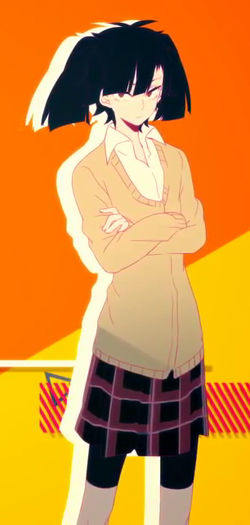,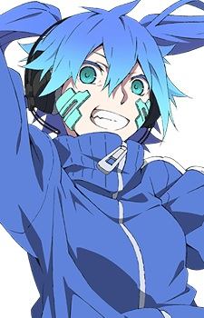หญิงสาวมัลแวร์ไซเบอร์ผู้เข้าไปก่อกวนในคอมพิวเตอร์ของคิซารางิ ชินทาโร่ และสมาชิกลำดับที่ 6 แห่งกลุ่มซ่อนดวงตา เอเนเป็นซอฟต์แวร์ที่มีอุปนิสัยขี้เล่น ชอบก่อกวนชินทาโร่อยู่เสมอ ในอดีตนั้น เอเน เคยเป็นมนุษย์ธรรมดามาก่อน ซึ่งก็คือ เอโนโมโตะ ทาคาเนะ เพื่อนร่วมชั้นของโคโคโนเสะ ฮารุกะ ทาคาเนะนั้นมักจะหงุดหงิดอยู่ตลอดเวลา เธอถูกจับตัวไปทดลองและได้กลายเป็นซอฟต์แวร์คอมพิวเตอร์ไปในที่สุด
ความสามารถ : Opening Eye หลังจากที่ทาคาเนะได้ร่างกายมนุษย์คืน เธอสามารถนำความรู้สึกนึกคิดของตนเองกลับไปเป็นซอฟต์แวร์เอเนได้ แต่ในระหว่างที่ใช้ความสามารถนี้ ร่างกายของทาคาเนะจะอยู่ในสภาพหมดสติและไร้การป้องกัน
NO.7 คิซารางิ ชินทาโร่
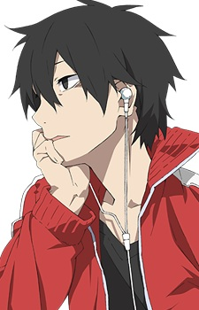เด็กหนุ่มนีท (คนที่ไม่เรียนและไม่ทำงาน) ผู้ขังตัวเองอยู่ในห้องนอน พี่ชายแท้ๆ ของคิซารางิ โมโมะ เพื่อนสนิทของ ทาเทยามะ อายาโนะ และยังเป็นสมาชิกลำดับที่ 7 ของกลุ่มซ่อนดวงตาอีกด้วย ชินทาโร่มีสติปัญญาที่ฉลาดมากขนาดที่มักจะสอบได้คะแนนเต็มบ่อยๆ การตายของอายาโนะทำให้ชินทาโร่ตัดสินใจขังตัวเองอยู่ในห้องเป็นระยะเวลานานถึง 2 ปี ก่อนจะเกิดเหตุการณ์ที่ทำให้เจ้าตัวต้องออกจากบ้านและได้ไปพบกับสมาชิกของกลุ่มซ่อนดวงตาคนอื่นๆ
ความสามารถ :Retaining Eye ชินทาโร่สามารถจดจำเรื่องราวทุกอย่างที่เคยเห็นมาได้ไม่มีวันลืม ซึ่งรวมไปถึงเหตุการณ์ที่เกิดขึ้นในรูทอื่นๆ อีกด้วย
NO.8 อามามิยะ ฮิบิยะ
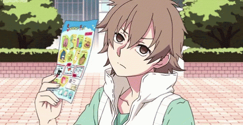สมาชิกลำดับที่ 8 ของกลุ่มซ่อนดวงตา เด็กหนุ่มผู้ที่อายุน้อยที่สุดในกลุ่ม เจ้าตัวต้องไปติดอยู่ในโลก Heat Haze หรือโลกของหมอกความร้อนร่วมกันกับ อาซาฮินะ ฮิโยริ เพื่อนของตนและหญิงสาวที่ตกหลุมรัก จนต้องวกวนไปในโลกที่ไม่มีที่สิ้นสุด
ความสามารถ :Focusing Eye ฮิบิยะสามารถรับรู้ถึงรายละเอียดสิ่งของที่อยู่ไกลๆ ได้
NO.9 โคโคโนเสะ ฮารุกะ หรือ โคโนฮะ
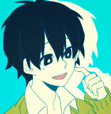,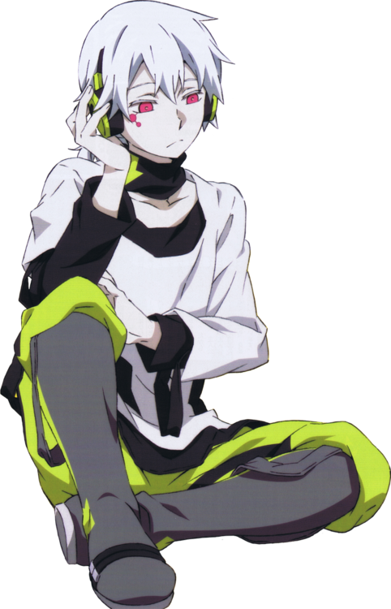ชายหนุ่มผมขาวสมาชิกลำดับที่ 9 ของกลุ่มซ่อนดวงตา ในอดีตนั้นโคโนฮะเคยเป็นเด็กหนุ่มที่มีผมสีดำธรรมดาที่ชื่อว่า โคโคโนเสะ ฮารุกะ โดยฮารุกะนั้นเป็นเด็กหนุ่มร่างกายอ่อนแอ เพื่อนร่วมชั้นกับ เอโนโมโตะ ทาคาเนะ และมีอุปนิสัยที่ชอบทำตัวสบายใจตลอด ไปจนถึงการไม่ค่อยจะแคร์สายตารอบข้าง แต่เมื่อได้รับพลังก็ทำให้ร่างกายของฮารุกะเปลี่ยนไป กลายเป็นโคโนฮะผู้ที่มีร่างกายแข็งแรงมหาศาล แต่มักจะความทรงจำเสื่อม
ความสามารถ :Awakening Eye โคโนฮะสามารถปรับเปลี่ยนร่างกายให้กลายเป็นแบบที่ตนเองต้องการ หรือก็คือร่างกายที่แข็งแรงมหาศาล แต่แลกมากับการสูญเสียความทรงจำ
NO.0 ทาเทยามะ อายาโนะะ
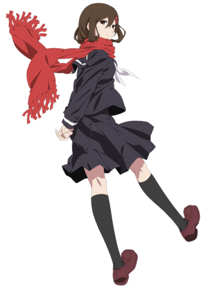สมาชิกลำดับที่ 0 และผู้ก่อตั้งกลุ่มซ่อนดวงตา นักเรียนสาวเพื่อนสนิทของคิซารางิ ชินทาโร่ อายาโนะมักจะสดใสร่าเริงอยู่ตลอดเวลา และคอยแคร์ผู้คนรอบข้างอยู่เสมอ อายาเนะยังเป็นพี่สาวบุญธรรมของ คิโดะ สึโบมิ, เซโตะ โคสุเกะ และ คาโนะ ชูยะ ซึ่งเธอคอยให้กำลังใจทั้งสามคนอยู่ตลอดเกี่ยวกับเรื่องที่ทั้งสามคนมีดวงตาสีแดงไม่เหมือนคนอื่น ในเวลาต่อมาเธอได้ตัดสินใจฆ่าตัวตายเพื่อปกป้องเพื่อนตนเองจากการทดลองของผู้เป็นพ่อ ซึ่งสร้างความสะเทือนใจให้กับชินทาโร่อย่างมาก
ความสามารถ :Favoring Eye อายาโนะสามารถส่งผ่านความคิดและความทรงจำของตนเองให้ผู้อื่นได้
คำศัพท์ที่น่าสนใจ